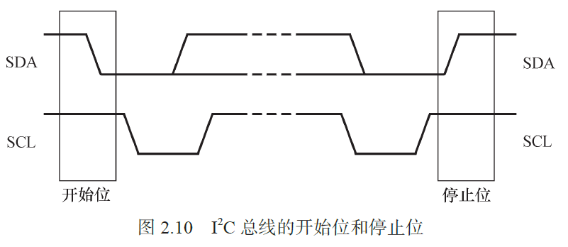
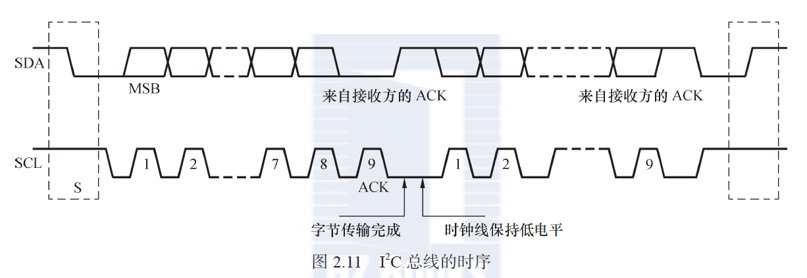

I2C总线与I2C通信协议的区别
-
I2C总线是硬件概念： I2C总线是物理连接设备的电缆和线路。它提供了设备之间进行串行通信的基础结构。
-
I2C协议是通信规则： I2C协议定义了在I2C总线上设备之间如何进行通信的规则。它规定了数据的传输格式、起始和停止条件、时钟频率等。
IIC详解
IIC是多主机的半双工同步通信协议，数据线SDA和时钟线SCL构成。
- 各设备连接到总线的输出端必须是开漏输出或集电极开路输出的结构
- 在任意时刻只能有一个主控
空闲状态，上拉电阻使SDA和SCL信号线同时处于高电平；
由于**”线与“**逻辑，I2C总线上任意器件输出低电平都会使相应总线上的信号线变低；
开始位和停止位
当SCL 稳定在高电平时，SDA 由高到低的变化将产生一个开始位，而由低到高的变化，则产生一个停止位。

- 开始位和停止位都由I2C 主设备产生。
在选择从设备时，如果从设备采用7 位地址，则主设备在发起传输过程前，需先发送1 字节的地址信息，前7 位为设备地址，最后1 位为读写标志。之后，每次传输的数据也是1字节，从MSB 开始传输。
每个字节传完后，在SCL的第9个上升沿到来之前，接收方应该发出1个ACK 位。
SCL 上的时钟脉冲由I2C主控方发出
在第8个时钟周期之后，主控方应该释放SDA。(因为要让给从机响应ACK)
